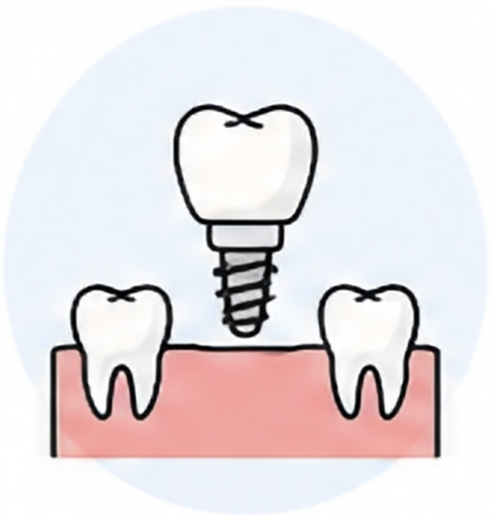
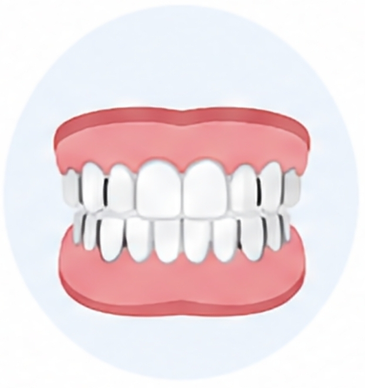
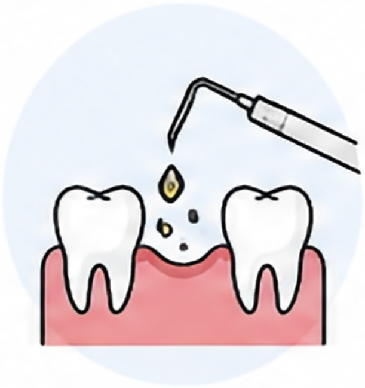
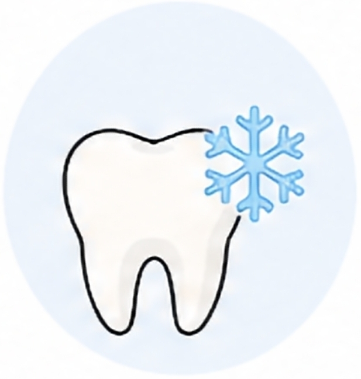
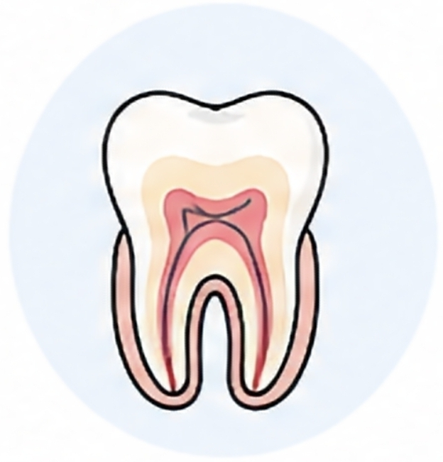
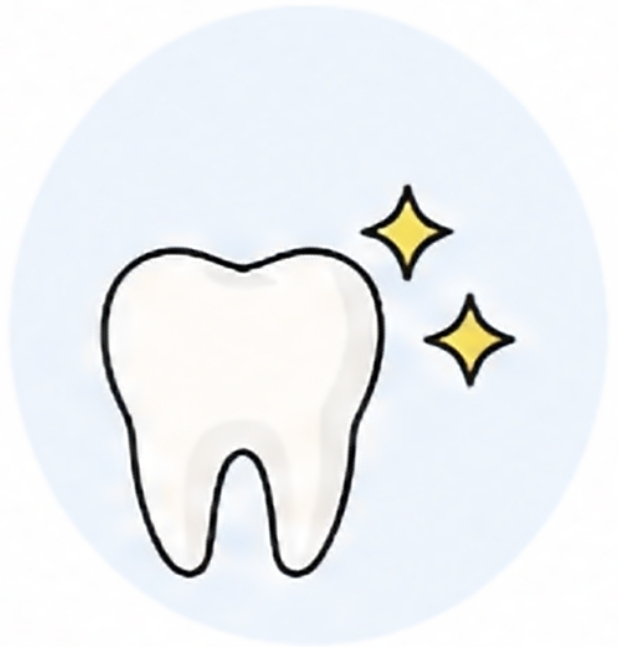

과잉진료 없이 꼭 필요한 치료만 정직하게 권합니다.
우리가족 평생 주치의, 하늘빛치과와 함께 하세요.
안전하고 정직한 진료를 약속하는 의료진을 소개합니다.
안녕하세요. 하늘빛치과의원 대표원장 김태영입니다. 저희 치과는 무분별한 과잉 진료를 지양하고, 환자분 본연의 소중한 치아를 하나라도 더 살리는 것을 최우선 가치로 삼고 있습니다.
내 가족을 치료한다는 정직하고 꼼꼼한 마음가짐으로, 방문하시는 모든 분들께 편안하고 아프지 않은 따뜻한 진료 경험을 선사해 드릴 것을 약속드립니다.
항목을 클릭하시면 자세한 치료 안내를 확인하실 수 있습니다.

디지털 네비게이션을 이용한 정확하고 안전한 인공치아 식립

잇몸 체형에 딱 맞아 덜 아프고 편안한 기능성 틀니 제작

스케일링부터 정밀 치주 치료까지 잇몸 뼈 건강 보존

자극받고 노출된 치근을 보호하여 시린 증상을 체계적으로 완화

감염된 신경 조직을 정밀하게 제거하고 밀폐하여 자연치아 보존

치아 변색과 형태를 개선하여 밝고 자신감 넘치는 미소 완성
하늘빛치과는 더 안전하고 정교한 진료를 위해 대학병원급 첨단 장비를 가동합니다.
방사선 노출을 최소화하면서 잇몸 뼈와 신경관의 위치를 3차원으로 정밀 분석하여 안전한 수술 계획을 수립합니다.
출혈과 통증을 최소화하여 정밀한 잇몸 치료 및 절개가 가능하며, 시술 후 회복 속도를 획기적으로 가속화합니다.
복잡한 미세 신경관 내부를 플라즈마 기술로 정밀 살균 및 소작하여, 감염 위험을 낮추고 자연치아 보존율을 극대화합니다.
고무 인상재를 입에 넣는 불편함 없이, 빠르게 구강 내부를 3D 디지털 데이터로 채득하여 정교한 보철을 설계합니다.
식립 직전 임플란트 표면의 유기물을 제거하고 친수성을 높여, 잇몸 뼈와 임플란트의 골융합 기간을 단축시키고 성공률을 높입니다.
구강 스캔 데이터를 바탕으로 임플란트 수술 가이드 및 임시 보철물을 원내에서 신속하고 정확하게 직접 출력합니다.